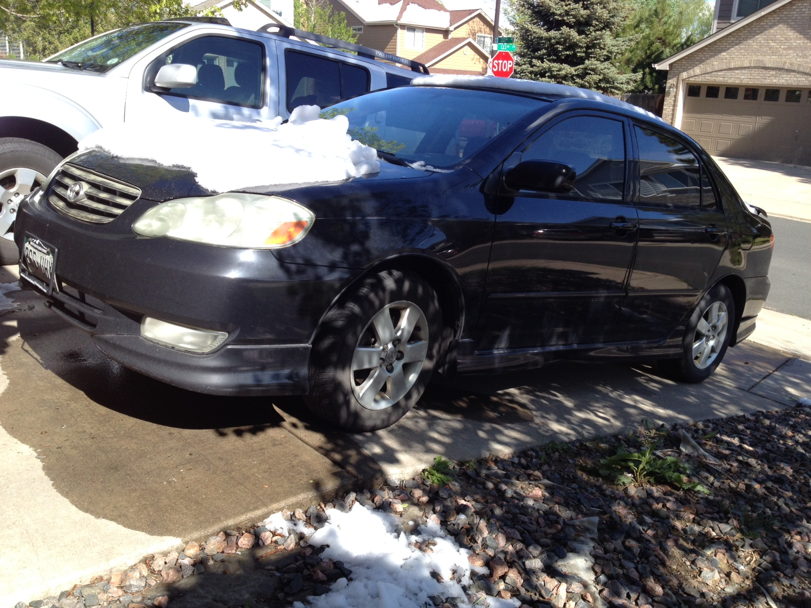
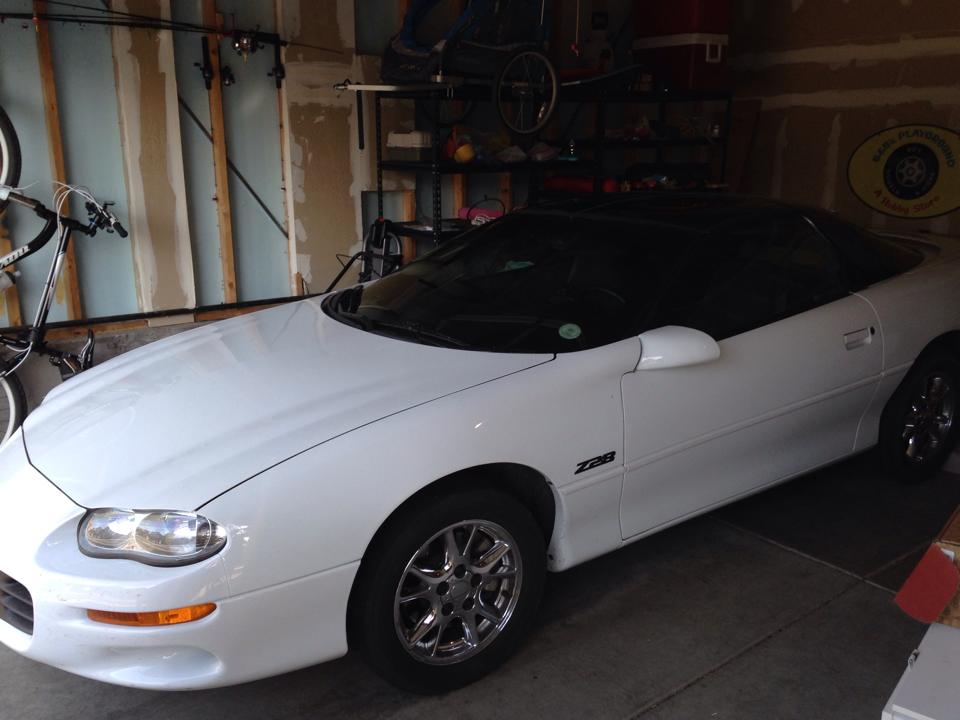

Drupal 8
Introduction to Module Development
Brandon Williams (crazysix)
Discussion
- OOP
- Symfony
- Drupal 8
- D8 Module Development
- Status/Usefulness
- Helpful Resources
The Challenge of Change
- New Technology
- New Processes
- Learning Curve
- Bugs
- Extending (contrib Modules)
- Time
- Value
- Why fix what's not broken?
Preparation, Planning, Time
It makes all the difference.
Object Oriented Programming (OOP)
- It is still programming.
- It is still PHP.
- Yes, you can do it without OOP.
- It is not an issue like it was.
Object Oriented Programming (OOP)
The Car Class
class Car {
public $make;
public $model;
public $color;
}
public function __construct($make, $model, $color) {
$this->make = $make;
$this->model = $model;
$this->color = $color;
}
public function valueEstimate() {
...
}
Object Oriented Programming (OOP)
$car = new Car('Toyota', 'Corolla', 'black');

Object Oriented Programming (OOP)
$car = new Car('Chevrolet', 'Camaro Z28', 'White');

Object Oriented Programming (OOP)
Why use it?
- Data/Object Approach
- Structure
- Consistency
- Readability
- Private/Protected Data
Symfony
Why use a framework?
Why do you use Drupal?
- Deliver the message
- Community support
- Documentation
- Extendable
- Collaborative
- Modules
- Improvements/upgrades
Symfony
"Why would you have a custom piece of furniture made if you could find one that perfectly matches your décor, right off the shelf?"
- Symphony
- Faster and less greedy
- Unlimited flexibility
- Expandable
- Stable and suystainable
- Documentation
Symfony in 5 minutes
Drupal 8
Why all the big changes?
I cannot speak for the community at large or the Drupal association, but this is what I think.
- The support of a proven framework with ongoing development
- Mobile
- Web Services
- Theming improvements
- Fields
- Industry Standards
- Recruiting
And?
This is where we choose how to look at the challenges ahead.
Let's Dive In
Keep in mind, things are still evolving!
Google Analytics
- Legacy Code
- Settings Form
- Menu
- Routing
- Menu links
Examples
- Block
- DBTNG
- Configure > AddForm
- Menu
- Routing
- Page
- Email
Woohoo, let's stop using D7 now!
No, not anytime soon.
- Keep playing
- Keep learning
- Watch the change logs and announcements
- Early adapters go for it
- Consider challenges and stability for new projects
- If you need modules, make sure a stable D8 version has been released
- Contribute!!!!
/